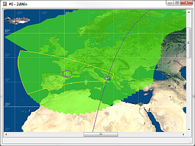
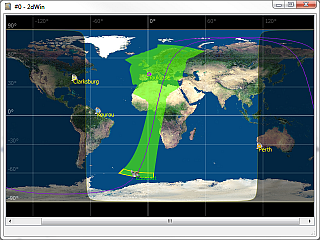
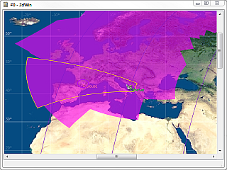

SurfaceView user manual¶
The SurfaceView client application displays a planisphere of the project’s main central body in different projections.
Introduction¶
SurfaceView displays a 2D scene based on a projection of one of the bodies of the VTS project tree. Other entities defined in the project tree (such as satellites, ground stations or other celestial bodies) are represented as 2D items over their projected position.
What is displayed in SurfaceView¶
The following items are displayed on the planisphere of SurfaceView:
- Main body
The plate carre projection of the main body’s surface is displayed in the background of the scene.
- Latitude/Longitude grid
The grid automatically adapts to the current zoom level. The latitude and longitude values are displayed respectively at the left and top of the window.
Interacting with SurfaceView
- Sun terminator
The fictional line that separates the sunlit and obscured faces of the body is displayed in yellow and the obscured face appearing darker than the sunlit one. Refer to the Configuring the sun terminator section in the VTS configuration utility user manual chapter for more information.
- Subsolar point
The the point at the surface of the body where the Sun is at the zenith is represented as an icon. Refer to the Configuring the sun icon section in the VTS configuration utility user manual chapter for more information.
- Celestial bodies
Celestial bodies different from the main body are displayed as icons over their projected position.
SurfaceView Sun terminator and other celestial bodies
- Satellites
Satellites orbiting the main body are displayed as icons over the projection of their orbit position. Icons are automatically oriented in the direction of the satellite motion.
- Satellite sensor footprint
The satellite sensor footprint is the intersection of the satellite sensor’s aim volume with the surface of the body. Refer to the Configuring a satellite sensor section in the VTS configuration utility user manual chapter for more information.
SurfaceView Satellite and sensor footprint
- Satellite / Sun / Celestial bodies ground track
The ground tracks of the sun, satellites and other celestial bodies appear before and after each entity. Their lengths can be defined in the VTS configuration utility. In SurfaceView, the tracks are displayed in the body’s local frame (as opposed to an inertial frame in Celestia).
- Satellite / Celestial bodies visibility region
The visibility regions of satellites and other celestial bodies is the region of the earth visible from the current position of the entity. Their graphic properties can be defined in the VTS configuration utility.
SurfaceView Satellite track and visibility circle
- Ground stations
Ground stations attached to the main body. Refer to the Configuring a ground station section in the VTS configuration utility user manual chapter for more information.
- Station sensor footprint
The station sensor footprint is the intersection of the ground station sensor’s aim volume with a virtual sphere at a specified altitude. This altitude can be either fixed or linked to the satellite altitude. Refer to the General properties of a ground station section in the VTS configuration utility user manual chapter for more information.
- Geometrical visibility
The geometrical visibility between a satellite and a ground station targeting its altitude. Refer to the General properties of a ground station section in the VTS configuration utility user manual chapter for more information.
SurfaceView Ground Station
- Regions of Interest (ROI)
Regions Of Interest attached to the main body. Refer to the Configuring a Region Of Interest section in the VTS configuration utility user manual chapter for more information.
- Points of Interest (POI)
Points Of Interest attached to the main body. Refer to the Configuring a Point Of Interest section in the VTS configuration utility user manual chapter for more information.
SurfaceView ROI and POI
- Mission events
The mission events attached to all satellites of the main body. Mission events appear at the date of their occurrence on the ground track of the satellite they are attached to. Refer to the Events attached to a satellite section in the VTS configuration utility user manual chapter for more information.
SurfaceView mission events attached to a satellite
- Clusters
Clusters are attached to the main body and represent a population of objects.
Configuration in VTS¶
The entities and properties defined in the VTS configuration utility will be displayed in SurfaceView. The main body can be defined using the initial parameters of the application, otherwise the first central body defined in the VTS project tree will be used. Refer to the Configuring a central body section in the VTS configuration utility user manual chapter for more information.
Application parameters in VTS¶
When adding SurfaceView as a VTS client application, some parameters can be set by clicking on the SurfaceView entry in the VTS project tree:
- Scene Reference
This combo box allows you to select the main body from the list of celestial bodies defined in the VTS project tree. The selected body will become the scene reference and in the SurfaceView instance and the position of all other entities will be projected on it. By default, the first body from the VTS project tree is selected as a scene reference.
- Map Projection
This combo box allows you to select the world map projection that will be used in the SurfaceView instance. Currently supported projections are Equirectangular (plate carree), Mercator and Polar.
- Target framerate
The application target framerate (frames per seconds). A higher value improves the accuracy but slows down the application. An accurate simulation can be achieved with a framerate of 40, however framerates higher than 50 will make little difference in the accuracy.
- Track sampling resolution
This parameter allows you to modify the sampling resolution of all the tracks in VTS. Tracks represent the trajectory of different objects (satellites, celestial bodies, stars). Decrease this value to improve track accuracy at the expense of performance degradation.
- Sensor geometry section count
Number of points making up the outline polygon of the aiming sensor surface. Increase this parameter if you want to focus on sensor swath accuracy. Decrease it for long missions coverage to improve performance.
- Sensor coverage significant threshold
The sensor swath is composed by a set of instantaneous sensor aiming surfaces represented by polygons. An instantaneous aiming surface is retained when a significant percentage of new coverage is provided by the new surface. This parameter sets the percentage of novelty (minimum threshold).
- Use a small value for an agile satellite.
- Use a high value for a long coverage mission.
A significant threshold of 5% of novelty is ideal for an agile satellite maneuver.
A small threshold works well for long coverage missions but slows down the display.
A significant threshold of 40% gives poor results during agile satellite maneuvers.
A high threshold gives good results for long coverage missions with good performance.
This parameter has no effect if the Sensor coverage nadir optimization is enabled.
- Sensor coverage merging threshold
The sensor residual trace is composed by many polygons. Its length is maintained by deleting polygons at the end of the tail. For better performance, polygons are merged together when two polygons have at least a certain percentage of area in common. This parameter sets the percentage of novelty (minimum threshold).
- Choose a small value when the length of the sensor residual trace must be accurate (0% of merging will keep all polygons separated).
- Choose a high value for better performance (99% of merging will merge huge blocks of polygons, which will be removed one by one, making the residual trace length vary a lot).
- Choose the special value of 100% to only merge by orbit path color : this mode is useful for long coverage missions, where only the current orbit pass should be displayed.
This parameter has no effect if the Sensor coverage nadir optimization is enabled.
- Sensor coverage nadir optimization
For satellites pointing nadir, this optimization improves significantly the performance of the sensor coverage calculation at the cost of reducing the accuracy: the computed coverage is less accurate but the simulation is faster and it shows satellites coverages overlap. If the optimization is disabled, the sensor coverage will follow the exact sensor surface.
If the optimization is enabled, the Sensor coverage significant threshold and Sensor coverage merging threshold parameters will have no effect in the application.
Refer to the Coverage swath section for more information.
Coverage swath¶
SurfaceView has an option to optimize the coverage swath of satellites pointing nadir.
Without the nadir optimization, the sensor coverage is exact because the sensor surface is used as a stamp. However, the coverage could be incomplete if the time ratio is high enough (some sensor stamps will be missed). By the default, the coverage is kept in memory during one hour.
With the nadir optimization, the sensor coverage will be always complete even if the time ratio is high and it will allow the simulation of a higher number of satellites’ coverages without slowing down the application. However, the accuracy of the coverage can be reduced at the poles or if the satellite is not pointing nadir. The nadir optimization is enabled by default.
Map Projections¶
Currently SurfaceView supports the following projections:
- Equirectangular projection (plate carree)
- Mercator
- Polar
Each SurfaceView instance can be configured with a different projection using from the initial parameters of the application. Please refer to Application parameters in VTS.
Tile map¶
The tilemap mechanism allows you to load and display high definition maps as background images, depending on the zoom level. The tilemap is configured by a local URL pointing to a multi-level image hierarchy or a WMS server.
Please refer to Tile Map textures for more information about local or WMS tile maps.
When using a WMS tile map, in SurfaceView, the following parameters will be automatically added according the current zoom level.
- Latitude/longitude tile’s border coordinates:
&BBOX=<west>,<south>,<east>,<north> - Tile size in pixels:
&WIDTH=<width>&HEIGHT=<height>
Open Street Map in SurfaceView
Clusters¶
Clusters are used to display a large population of objects. Information about each object can be displayed in real-time.
Information about an object of the population
User can configure it by editing the following parameters:
- Cluster visibility:
String defining a partial or a total visibility of the cluster. Allowed strings are :
all: all objects are visiblenone: all objects are hiddenall except obj1, obj2, ..., objN: all objects are visible except the objects specified in the list (comma-separated object names)none except obj1, obj2, ..., objN: all objects are hidden except the objects specified in the list (comma-separated object names)
Interacting with SurfaceView¶
Context menu¶
The context menu accessible by right-clicking anywhere in the application window offers the entries:
These tools can also be accessed through the window toolbar. The toolbar is hidden by default and can be shown/hidden by pressing F12

F8Activates the “central measure” tool. This mode allows creating central measures : all measures are done from the same first “central” point.

Ctrl+FAdjusts the zoom level so that the whole planisphere fits in the window.

Ctrl+GShows/hides all ground station icons.
{kind=link}
{kind=link}
{kind=link}
{kind=link}
{kind=link}
{kind=link}
{kind=link}
{kind=link}
{kind=link}
{kind=link}
Cursor coordinates¶
The cursor coordinates can be displayed by pressing the SHIFT key. The coordinates expressed in latitude/longitude are displayed in the window status bar.
Use SHIFT + left click to copy the cursor coordinates into the clipboard.
When the Edit mode is active, the points are kept after the release of SHIFT, so that more points can be accumulated.
When the Normal mode is active, the points are cleaned after the release of SHIFT. Added new points will reset the previous points in the clipboard.
You can copy multiple coordinates by maintaining the SHIFT key pressed and left clicking on different locations. The distance between the selected points is also displayed in the status bar. The locations marks will remain visible until the SHIFT key is released. This is useful to create a POI/ROI as the coordinates can be directly pasted in the POI/ROI file.
Projection center¶
It is possible to shift the longitude coordinate of the map projection’s center and thus to center the scene at a meridian other than the prime meridian (Greenwich).
This is achieved by holding the CTRL key while dragging the background image. The coordinates of the projection center are displayed in the window status bar.
Orthodromic measures¶
You can create measures in SurfaceView using one of the three availables tools, described below. The LEFT button of the mouse is used to create measures.
The three measuring tools proposed by SurfaceView are:
- Single Measures (F6) : allows creating orthodromic measures from points to points.
- Chained Measures (F7) : allows creating chained measures : the end point of a measure becomes the beginning point of the next measure.
- Central Measures (F8) : allows creating central measures : all measures a done from the same first “central” point.
Pressing F9 clears all the measures.
Interacting with a satellites and other entities¶
Centering lock¶
Clicking on a satellite, a station or any celestial body will center and lock the view on that entity during the animation. Zoom actions are also centered on the entity instead of the mouse cursor. Clicking the map unlocks the view.
Geographical coordinates¶
Hovering the mouse over a satellite, ground station or celestial body, will display a tooltip containing the geographical coordinates of the entity.
These coordinates are computed by VTS and are approximate, especially when computing the longitude near the poles.
Moving the time¶
The Sun, satellites and celestial bodies defined in the VTS project have a ground track associated which can be used to drag the entity along it in order to move forwards or backwards in time. The dragged entity automatically snaps to the nearest point of its ground track. The corresponding date is sent to the Broker and all applications are synchronized.
It is possible to “jump” from orbit to orbit if the ground track is long enough (for example, greater than the period of the satellite’s orbit). This results in a similar “jump” in visualization time.
Dragging satellites near track intersections can become very “unstable” (typically near the poles, or if the track time window is greater than the period of the satellite’s orbit). The satellite may “jump” from orbit to orbit depending on the position and movement of the mouse. It is advised to avoid dragging a satellite in these areas if “jumping” from orbit to orbit is not desired.
Note that visualization time is automatically paused when dragging an entity.
Mission events¶
SurfaceView displays mission events attached to satellites and allows some interaction with them. The events are displayed along the satellite’s ground track at the corresponding date of the event. Refer to the Events attached to a satellite section in the VTS configuration utility user manual chapter for more information.
The line segment linking the icon of an event to its actual position on the satellite ground track is the same color (only a bit lighter) as that of the satellite ground track.
The name of all events are always displayed if the All event text visibility parameter is checked in the Broker.
The visibility of all event types can be controlled from the Events tab of the Broker. Refer to the *Events* tab section of the Broker user manual chapter for more information.
The appearance of mission events can be defined in the Event Type Editor tab of the VTS configuration utility. Refer to the Configuring event types section in the VTS configuration utility user manual chapter for more information.
Interacting with events¶
- Hovering: Hovering above a single event will display a tooltip containing the name of the satellite the event is attached to, the name of the event, as well as additional data provided by the CIC/CCSDS event file.
- Events at the exact same date – or at dates close enough that they appear to be at the same date at the current zoom level – will animate and split when the mouse is hovered above them.
Double-click: Double-clicking an event will set the current visualization time to the date of the event. The satellite then appears located at the position of the event. The visualization is also paused.
Technical notes¶
Rotation model¶
SurfaceView uses the VTS ephemeris catalog to display an accurate positioning and Sun terminator (see the [Central bodies in VTS] section for more information about ephemeris origin). For custom positioning or unsupported bodies, suitable ephemerides files will need to be provided to override the catalog ones. Refer to the Position and orientation of a body section of the VTS configuration utility user manual chapter for more information.
Central body texture¶
The current architecture of the SurfaceView application enforces a few constraints:
- The built-in texture for Earth is embedded in SurfaceView. It is based on the Blue Marble photos from NASA (image link , documentation link).
- For other solar system bodies or celestial bodies available in Celestia, the built-in texture will be taken from Celestia, using the equidistant cylindrical (plate carree) projection.
- For bodies not available in Celestia, a black texture will appear in built-in mode. A custom texture should then be defined. Refer to the Texture of a body section of the VTS configuration utility user manual chapter for more information.